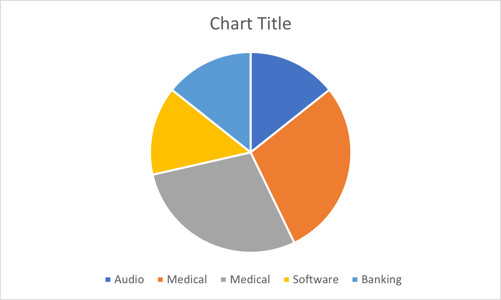

- Ideal Job
- Industry Data
Team Profile - DAT Team
Welcome to the Drive Aware Tech Team (DAT Team) group page. Drive Aware is our teams proposed project that will be developed in-line with RMIT's Introduction to Information Technology assessment work. Our aim is to develop Drive Aware from theoretically stage to tangible results towards a working prototype. Drive Aware is an App based project which will work in conjunction with wearable technology to track and monitor a users biometric vital signs and fatigue indicators associated with long periods of sustained driving.
Meet the DAT Team Members
NICOLE CLARKE - Student: S3851518
Link to Nicole's Webpage
BACKGROUND
I have worked for the same company since 1997 and live with my two adult children in northern suburbs of Melbourne. I have lived in Melbourne all my life.
My hobbies include learning new things, reading, crosswords, sudoku & card/board games.
My interest in IT stems from the feeling and excitement I get from learning new things. The very nature of technology is forever changing and evolving so it can never get boring. You just cannot ever know ‘everything’.
My experience in IT ranges from data entry to tech lead/implementation lead, development, training delivery and project management (on a small scale). I have worn many hats since I joined the workforce back in the 80s and majority of the roles involved some form of computer interaction.
My current role as an IT Implementation Lead involves coordinating with many different IT specialists and teams to implement the job for delivery to the customer. The specialist roles I engage with range from Developers, Analysts, Architects, Network specialists, etc. I love to learn about the different aspects from our business perspective because it amazes me what can be achieved.
My strengths would have to be my Communication skills, Organisational skills and my enthusiasm for learning. I believe with effort you can figure out most things.
PROFILE
On review of my test outcomes, I think some of the key points that would be helpful for the team are:
Conscientiousness (Big 5) (Result: 87/100) – I agree 100%. I care a lot about my work and how people see me. I do not work well in a disorganised or haphazard environment, so usually end up organising everyone to help it work.
Dutiful and very responsible (16 Personalities) (Result – Logistician)– definitely take my responsibilities very seriously. I do not like to let anyone down.
Honest & Direct (16 Personalities) (Result – Logistician) – can be misconstrued as blunt or insensitive. I work on this aspect and work on filtering my first thoughts into a more presentable way so that it does not come across as blunt or insensitive.
I would think the above results will show the group that I can be relied upon to not only do my share but always aim to deliver what is required in a timely manner. I am not one to leave things to the last minute or procrastinate.
In regard to the Honest & Direct feedback, although I can agree that it might be part of my personality profile, it is not something that is a huge issue in my daily life. When I was younger I was probably a bit more prone to speaking out without thinking. In my wisdom, I have found much better ways to communicate and work really well in a team environment.
In relation to the learning style, it would be more beneficial for the group to understand that I learn better and engage better when I see or do something. So explaining an issue verbally is not always helpful to me. (This conflicts with the results that state I learn mainly by hearing and doing)
- Return to top
Ideal Jobs Comparison
Links to Ideal Job pages
Nicole ClarkeLiljana Josevski
Christopher Smith
Matthew Wotton
Gerard Samson-Dekker
Common Elements based on Industry
| Group Member | Job Titles | Industry | Qty |
|---|---|---|---|
| Christopher S | Software Developer | Audio | 1 |
| Gerard | Software Developer - Medical Computing | Medical | 2 |
| Liljana | Biomedical Software Engineer | Medical | 2 |
| Matthew | Cyber Security Analyst | Software | 1 |
| Nicole | Financial Crime Intelligence Analyst | Banking | 1 |

Common Elements based on General Skills
| Group Member | Job Titles | Skills | Qty |
|---|---|---|---|
| Gerard | Software Developer - Medical Computing | Problem Solving | 4 |
| Liljana | Biomedical Software Engineer | Problem Solving | 4 |
| Matthew | Cyber Security Analyst | Problem Solving | 4 |
| Nicole | Financial Crime Intelligence Analyst | Problem Solving | 4 | Gerard | Software Developer - Medical Computing | Team Work / Collaboration | 4 |
| Christopher S | Software Developer | Team Work / Collaboration | 4 |
| Matthew | Cyber Security Analyst | Team Work / Collaboration | 4 |
| Nicole | Financial Crime Intelligence Analyst | Team Work / Collaboration | 4 |
| Nicole | Financial Crime Intelligence Analyst | Communication Skills | 3 |
| Liljana | Biomedical Software Engineer | Communication Skills | 3 |
| Gerard | Software Developer - Medical Computing | Communication Skills | 3 |
| Christopher S | Software Developer | Writing | 3 |
| Liljana | Biomedical Software Engineer | Writing | 3 |
| Matthew | Cyber Security Analyst | Writing | 3 |
Common Elements based on IT Specific Skills
| Group Member | Job Titles | IT Skills | Qty |
|---|---|---|---|
| Christopher S | Software Developer | C++ | 2 |
| Gerard | Software Developer - Medical Computing | C++ | 2 |
| Christopher S | Software Developer | Git | 2 |
| Gerard | Software Developer - Medical Computing | Git | 2 |
| Christopher S | Software Developer | Software Development | 2 |
| Matthew | Cyber Security Analyst | Software Development | 2 |
| Gerard | Software Developer - Medical Computing | Software Engineering | 2 |
| Liljana | Biomedical Software Engineer | Software Engineering | 2 |
What common elements are there, if any?
- Only 2 out of the 5 ideal jobs fell into the same category for industry, which was Medical.
- The most common General Skill required across the Ideal Jobs is: Problem Solving, Team Work/Collaboration, Communication & Writing.
- The most common IT Specific skill across the Ideal Jobs is: C++, Git & Software Developer/Engineer
What differentiates each position from the others, if anything?
Most of the ideal job positions are related to Software development/Engineering. Even the Cyber Security Analyst requires some level of development.
The only role does not involve Software development is the Financial Crime Intelligence – this is more of a data analysis type role. Looking at data as opposed to creating software.
As mentioned above, most of the roles involve problem solving, communication and team work. All of these skills would be a massive advantage in any workplace as it would be rare to have a job that involves total isolation. Teams that work together well have the ability to create and deliver amazing projects.
How similar or different are your career plans across the group?
The majority of our group have been drawn to Software development. Although each may have selected a unique area they are all still focused on the development side.
Two group members have also chosen the medical side of development.
Two group members have chosen more analytic type roles – Crime Intelligence and Cyber Security.
- Return to top
Industry Data
Burning Glass Industry Data
Top Occupations Year March 2018Top Generic Skills March 2018
Top IT Skills March 2018
Individual Ideal Job Assessment
Nicole - Financial Crime Intelligence AnalystLiljana - Biomedical Software Engineer
Christopher S - Software Developer
Matthew - Cyber Security Analyst
Gerard - Software Developer - Medical Computing
What are the job titles for your group's ideal jobs?
How do each of these rank in terms of demand from employers?
Reference: Burning Glass Industry data - Top Occupations Year March 2018.pdf
| Group Member | Job Titles | Employer Job Title Demand | Ranking |
|---|---|---|---|
| Christopher S | Software Developer | Software Developer / Engineer | 1 |
| Liljana | Biomedical Software Engineer | Software Developer / Engineer | 1 |
| Gerard | Software Developer - Medical Computing | Software Developer / Engineer | 1 |
| Nicole | Financial Crime Intelligence Analyst | Cyber / Information Security Engineer / Analyst | 13 |
| Matthew | Cyber Security Analyst | Cyber / Information Security Engineer / Analyst OR Information Security Analyst | 13 or 17 |
How do the IT-specific skills in your required skill set rank in terms of demand from employers?
Reference: Burning Glass Industry data - Top IT Skills March 2018.pdf
| IT Skills | Employer Demand Ranking |
|---|---|
| SQL | 1 |
| Windows | 4 |
| C# | 12 |
| Linux | 13 |
| Software Engineering | 15 |
| .NET Programming | 16 |
| Git | 21 |
| Python | 22 |
| Network Engineering | 30 |
| Software Development | 41 |
| Firewalls | 48 |
| C++ | 49 |
| Information Security | 65 |
| Process testing | 75 |
| Software Optimisation | 101 |
| Software Architecture | 127 |
| Visual Studio | 130 |
| Network Security | 138 |
| Tableau | 171 |
How do the general skills in your required skill set rank in terms of demand from employers?
Reference: Burning Glass Industry data - Top Generic Skills March 2018.pdf
| Generic Skills | Employer Demand Ranking |
|---|---|
| Communication Skills | 1 |
| Problem Solving | 2 |
| Writing | 4 |
| Team Work / Collaboration | 5 |
| Troubleshooting | 6 |
| Leadership | 11 |
| Mentoring | 13 |
| Quality Assurance and Control | 14 |
| Meeting Deadlines | 16 |
| Analytical Skills | 17 |
| Team Building | 18 |
| Management | 19 |
| Articulate | 23 |
| Strategic Planning | 38 |
| Creative Problem Solving | 39 |
| Critical Thinking | 40 |
| Self Motivation | 43 |
What are the three highest ranked IT-specific skills which are not in your required skill set?
| Rank | IT Specific Skill |
|---|---|
| 2 | JavaScript |
| 3 | JAVA |
| 5 | Project Management |
What are the three highest ranked general skills which are not in your required skill set?
| Rank | Generic Skill |
|---|---|
| 3 | Organisational Skills |
| 7 | Planning |
| 8 | Detail-Oriented |
Having looked at the Burning Glass data, has your opinion of your ideal job changed? Why or why not?
The most in demand Job title according to the Burning Glass Industry Data is a Software Developer/Engineer.
Looking at the options chosen by our group of five, three have selected this type of role.
The remaining two have chosen security or intelligence which is ranked as 13/17.
The big question is, do we go for a career that has many opportunities and also many applicants? Or do we focus on a specific area that may have limited job opportunities but may also mean less applicants because they are more specialised.
To first look at the education side of things and the direction to take, it would make a lot of sense to focus on a degree that covers off a general variety of IT skills to give us a strong foundation – eg: Degree in Information Technology.
From there, we can drill further down into specific areas of interest.
It would be much easier to focus on an area of interest that an individual is attracted to as opposed to an area of demand. Not all roles are suited to all people.
Each member of our group has a unique idea of what interests them and what they feel would suit them. In our group’s situation, the majority have chosen roles that also happen to be the highest ranking as in demand jobs.
Although the other 2 roles may not be as in demand, they are still highly important roles due to the nature of security and privacy protection.
- Return to top of page
From your group's ideal jobs, identify your group's required skill set.
Nicole - Financial Crime Intelligence Analyst
- Return to top of page
Brief Summary of requirements from job advertisement
- Practical, tactical, big picture
- Passionate about commercial support and business solutions
- Analytically minded – using data analysis and data driven approach to solve complex business problems
- Analytics professional
- Advanced problem solving, statistical modelling & analytical skills
- Think commercially and contribute to engagement delivery, practice development and thought leadership
- Mindset to anticipate stakeholders needs as well as identify opportunities to support stakeholders in executing their strategies
- Able to communicate with impact and enjoy building relationships with internal and external stakeholders
Skills grouping - Generic
- Problem solving (2) & Creative problem solving (39)
- Team work/Collaboration (5)
- Troubleshooting (6)
- Analytical skills (17)
- Strategic Planning (38)
- Communication (1)
- Leadership (11)
Skills grouping - IT Specific
- SQL (1)
- Python (22)
- Tableau (171)
- PowerBI & Alteryx – not listed
From your group's ideal jobs, identify your group's required skill set.
Liljana - Biomedical Software Engineer
- Return to top of page
Brief Summary of requirements from job advertisement
- Background in computer and or electronic engineering
- Software development experience
- Experience adhering to quality standards
- Excellent spoken and written English
- Self motivated, able to work deadlines
- Demonstrated approach to documentation, clear thinking and problem solving
Skills grouping - Generic
- Communication skills (1)
- Quality Assurance and Control (14)
- Problem Solving (2)
- Writing (4)
- Meeting deadlines (16)
- Articulate (23)
- Self motivation (43)
Skills grouping - IT Specific
- Software Engineering (15)
- Software Development (41)
- C# (12)
- .NET Programming (16)
- Linux (13)
- Software Architecture (127)
- Process testing (75)
- C/C++ (49)
From your group's ideal jobs, identify your group's required skill set.
Christopher S - Software Developer
- Return to top of page
Brief Summary of requirements from job advertisement
- Passionate about music, recording and design.
- Demonstrated experience with C++ software development
- Knowledge of audio engineering and signal processing concepts
- Cross-platform development experience on Mac and Windows using Xcode and Visual Studio
- Strong self-motivation and work ethic
- Experience with Audio Plug-in APIs, Perforce or Git, 2D Graphics APIs, software optimization, creating software libraries
- Excellent written and verbal communication skills
- Work independently and with multidisciplinary team (several fields of study or academic interests)
- Experience playing and recording music
Skills grouping - Generic
- Self-Motivation (43)
- Writing (4)
- Articulate (23)
- Team Work/ Collaboration (5)
Skills grouping - IT Specific
- C++ (49)
- Mac - not listed
- Windows (4)
- Visual Studio (130)
- Git (21)
- Software optimisation (101)
- Software Development (41)
- audio engineering - not listed
- signal processing concepts - not listed
- APIs - Audio plug-in, 2D Graphics – not listed
- Perforce – not listed
- Xcode – not listed
From your group's ideal jobs, identify your group's required skill set.
Matthew - Cyber Security Analyst
- Return to top of page
Brief Summary of requirements from job advertisement
- Think outside the box
- Ability to critically analyse info security related data/events/incidences
- Strong knowledge of IT systems as well as networking & cyber security concepts
- Ability to coach and mentor junior staff
- Strong Written & Verbal communication Skills
- Strong interpersonal skills and can liaise with various teams and customers
- Experience in Security operations, SIEM (Security info and event management-set of tools & services), endpoint detection (cyber technology), threat hunting (active defence activity), Security sandbox technologies (security mechanism for separating running programs)
- Knowledge and experience across forensics, reverse engineering, firewalls, content filtering and file integrity monitoring technologies
- Info security & software development
Skills grouping - Generic
- Problem solving (2)
- Writing (4)
- Articulate (23)
- Team work/collaboration (5)
- Leadership (11)
- Management (19)
- Mentoring (13)
- Analytical skills (17)
- Critical thinking (40)
- Team building (18)
Skills grouping - IT Specific
- Elastic / Azure / EndGame / SIEM / Endpoint detection / Threat hunting – not listed
- Firewalls (48)
- Network engineering (30)
- Information Security (65)
- Network Security (138)
- Software Development (41)
From your group's ideal jobs, identify your group's required skill set.
Gerard - Software Developer - Medical Computing
- Return to top of page
Brief Summary of requirements from job advertisement
- Highly proficient in C++ programming
- B.S. or advanced degree in computer science, software engineering or a related field.
- Demonstrated software development expertise (e.g., active github account, successful school project, or documented open-source contributions)
- Enthusiasm for programming, learning, problem solving, and tracking technology trends
- Exceptional collaboration and communication skills
- Revision control system experience (we use git)
Skills grouping - Generic
- Problem solving (2)
- Tracking tech trends – not listed
- ollaboration (5)
- Communication Skills (1)
Skills grouping - IT Specific
- C++ (49)
- Git (21)
- Software Engineering (15)
- Return to top of page